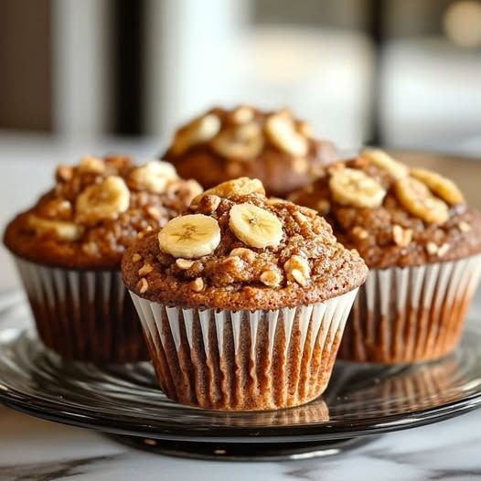

Muffins de Banana sem Açúcar
Veja como preparar muffins de banana sem açúcar fofinhos, nutritivos e cheios de sabor. Essa receita é perfeita para quem procura uma opção mais equilibrada para o café da manhã ou lanche da tarde, sem abrir mão de um doce delicioso. Feitos com ingredientes simples e naturais, os muffins possuem textura macia e o sabor adocicado da própria banana. Além de práticos, são ótimos para incluir mais leveza e bem-estar na rotina de forma saborosa.

Fácil
40min
Ingredientes da Massa
- 2 bananas maduras amassadas
- 2 ovos
- 1/2 xícara de farelo de aveia ou aveia em flocos finos
- 1/2 xícara de farinha de aveia (se não tiver, pode bater a aveia em flocos no liquidificador)
- 1/4 de xícara de leite desnatado ou leite vegetal (amêndoa, soja, etc.)
- 1 colher de chá de essência de baunilha
- 1/2 colher de chá de canela em pó (opcional)
- 1 colher de chá de fermento em pó
- 1 pitada de sal
Modo de Preparo
- Pré-aqueça o forno a 180°C e unte ou forre uma forma de muffin com forminhas de papel.
- Amasse as bananas com um garfo até formar um purê.
- Misture os ovos com o purê de banana até ficar bem homogêneo.
- Adicione os ingredientes secos: aveia, farinha de aveia, fermento em pó, canela (se estiver usando) e sal. Misture bem.
- Acrescente o leite e a essência de baunilha, mexa até ficar uma massa consistente.
- Distribua a massa nas forminhas de muffin, preenchendo cerca de 2/3 da capacidade.
- Asse por 20 a 25 minutos ou até que um palito saia limpo ao ser inserido no centro dos muffins.
- Deixe esfriar por alguns minutos antes de servir.